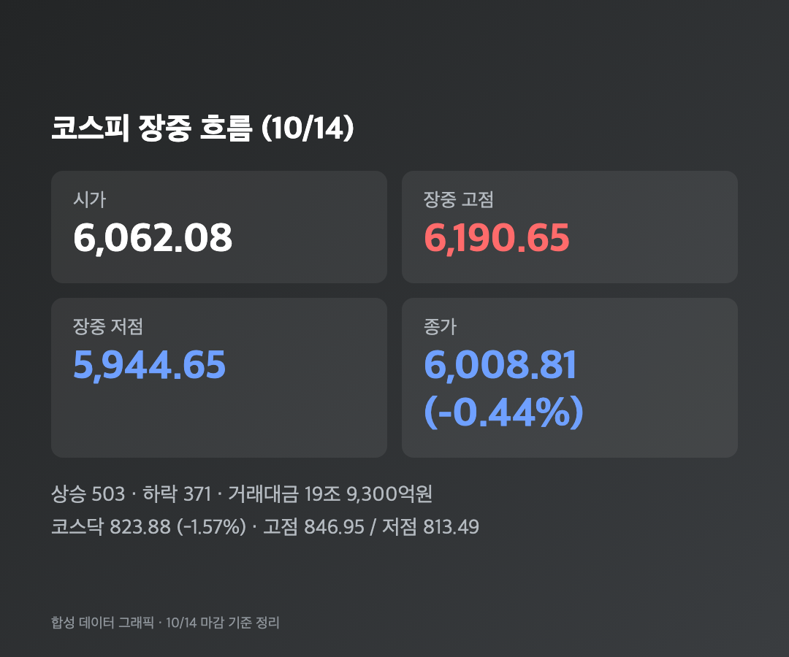
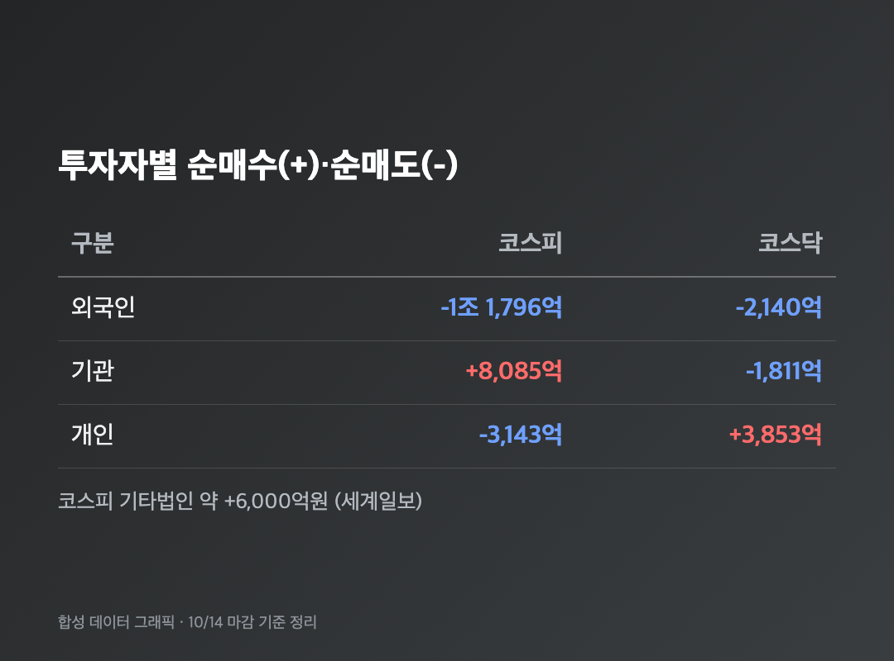
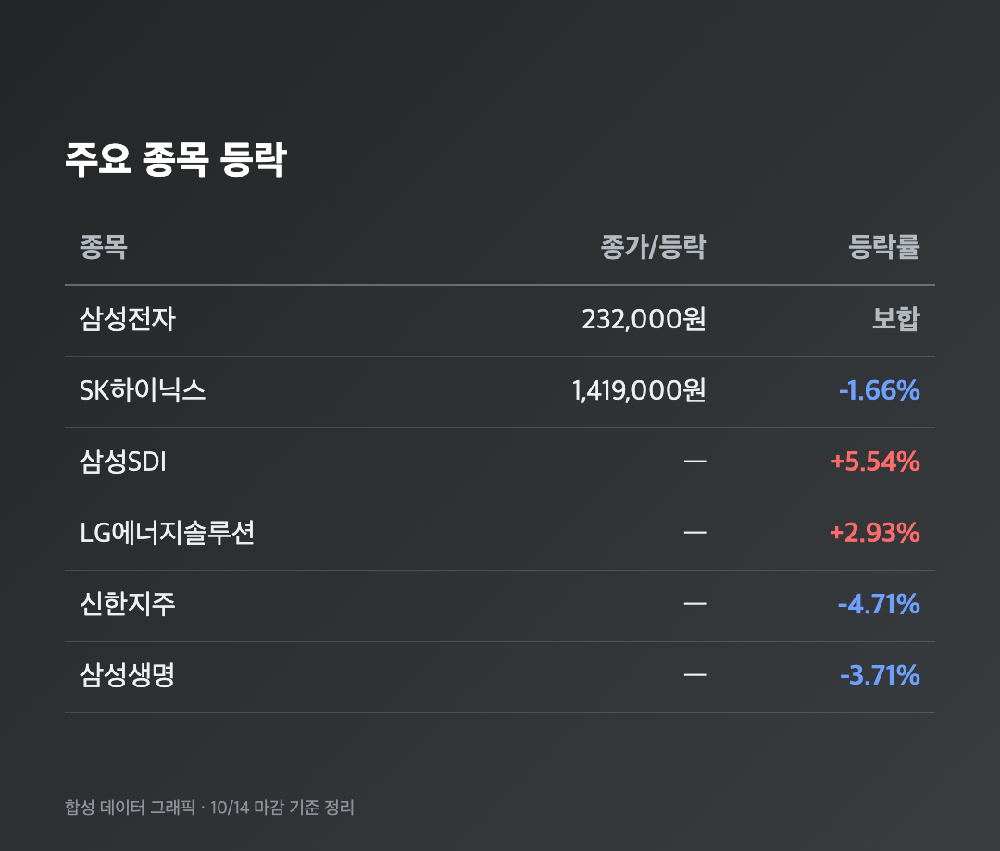
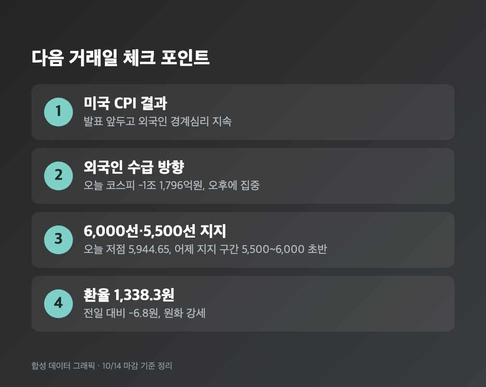

-0.44%. 어제 -5.46%를 겪고 보니 이 숫자가 귀엽게 보이더라고요. 근데 이게 6연속 하락이라는 건 함정입니다.
참고로 오늘(10/14, 수)은 정상 개장일이었고, 아래 수치는 전부 오늘 마감 기준이에요.
🎢 코스피 6,008.81 (-0.44%) – 6,190까지 올랐다가 5,944까지 밀린 하루
코스피 6,008.81 (-26.54포인트, -0.44%) / 코스닥 823.88 (-13.15포인트, -1.57%) |

코스피는 6,062.08로 시작해서 장중 6,190.65까지 올랐어요. 전날 급락에 대한 저가 매수가 들어온 거죠. 오후 2시쯤에도 6,060선에서 +0.41%였습니다. "오 오늘은 드디어 파란불 탈출인가" 했는데, 오후 들어 외국인 매도가 커지더니 14시 57분쯤 6,000선 아래로 내려갔고 저점은 5,944.65까지 갔어요. 종가는 간신히 6,000선 위였고요.
거래대금은 19조 9,300억원, 상승 종목은 503개, 하락은 371개였어요. 지수는 빠졌는데 오른 종목이 더 많았다는 게 은근 포인트입니다. 코스닥은 835.90에서 시작해 846.95까지 올랐다가 823.88로 마감, 낙폭이 -1.57%로 코스피보다 컸습니다.
💸 외국인 코스피 1조 1,796억원 순매도 – 기관이 8,085억원 받아냈어요
외국인 -1조 1,796억원 / 기관 +8,085억원 / 개인 -3,143억원 (코스피) |

어제 4조 원대(소스별로 4조 4,926억원~4조 5,259억원으로 달라요) 팔던 외국인이 오늘은 1조 원대로 줄었어요. 줄긴 했는데 오후에 몰려서 지수를 눌렀습니다. 개인이 어제는 2조 원 넘게 사던 걸 오늘은 3,143억원 순매도로 돌아섰다는 것도 눈에 띄고요. 기관이 8,085억원, 기타법인이 약 6,000억원 사들였어요.
코스닥은 반대로 개인이 3,853억원을 사고 외국인(-2,140억원)과 기관(-1,811억원)이 팔았어요. 신한투자증권 강진혁 연구원은 코스닥이 240일선과 RSI 과매도권 부근에서 두 번째 바닥을 다지는 국면이라고 봤고, 반도체 대형주엔 저가 매수가 들어오지만 소부장 수급은 빠져나간다고 했어요.
🔋 삼성전자 보합, 이차전지는 날았다 – 삼성SDI +5.54%
삼성전자 232,000원 (보합) / SK하이닉스 1,419,000원 (-1.66%) / 삼성SDI +5.54% / LG에너지솔루션 +2.93% |

삼성전자는 장중 241,500원까지 갔다가 230,000원까지 밀리고, 결국 어제 종가 232,000원 그대로 마감했어요. 25주 들고 있는 저는 장중 +4%에 "오 탈출하나" 하다가 다시 제자리로 돌아오는 걸 보고 혼자 허탈하게 웃었습니다. 정확히 아무 일도 안 일어난 하루예요.
SK하이닉스는 -1.66%, SK스퀘어는 -0.58%였고요. 대신 삼성SDI와 LG에너지솔루션 같은 이차전지, 에코프로가 올랐어요. 업종별로는 운송·창고 +3.60%, 화학 +2.00%가 강했고 보험 -4.41%, 의료·정밀기기 -3.26%가 약했습니다. 신한지주 -4.71%, 삼성생명 -3.71%도 눈에 띄었어요.
재밌는 개별 소식도 있었어요. HMM은 3분기 영업이익 1조원 기대감에 5%대 올랐고, 대한제강은 백악관이 한국의 알래스카 LNG 투자를 언급하자 20% 넘게 급등했습니다. 코스닥에서는 주성엔지니어링이 -8.21%로 반도체 장비주가 약했어요.
🔍 왜 또 빠졌나 – ASML 호실적에도 차익실현, CPI 앞 경계심
원인은 증권사마다 조금 다르게 봤어요.
• 대신증권 이경민 연구원: 국제유가 상승, AI 모멘텀 부진, 미국 CPI 발표를 앞둔 경계심리 때문에 외국인 이탈이 이어졌다고 설명했어요. ASML이 3분기 실적과 가이던스를 예상보다 좋게 내놨는데도 차익실현 매물이 쏟아져 반도체 투자심리가 위축됐다고 해요.
• KB증권 김동원 본부장: 최근 반도체 급락은 업황이나 실적 걱정보다 매크로 변수에 따른 투심 위축이 컸다며 "10월 주가 급락은 실적보다는 수급 공백과 공포가 만들어낸 조정"이라고 말했어요. W자 반등 가능성이 높다고도 봤고요.
• 미래에셋증권 김석환 연구원(어제자 보도): 외국인 매도가 진정돼도 금리 부담과 반도체 이익 전망 불확실성이 남아서 반등이 일시적일 수 있다는 의견이었어요.
낙관과 신중이 같이 나오니까 저도 한쪽만 믿진 않으려고요.
🔮 환율 1,338.3원, 그리고 다음 변수는 미국 CPI
원·달러 환율 1,338.3원 (-6.8원, 원화 강세) |

환율은 전일 주간 종가보다 6.8원 내린 1,338.3원이었어요. 원화가 강해지면 외국인 입장에선 환차익을 실현할 유인이 커진다는 해석도 있었는데(iM증권, 어제자 서울신문 보도), 오늘 외국인 매도가 환율 때문이라고 단정한 곳은 없었어요.
앞으로는 미국 CPI 결과와 외국인 수급이 방향을 정할 거라는 게 중론입니다. CPI 발표 날짜는 제가 확인하지 못했어요. 어제 KB증권 김민규 연구원은 5,500선 안팎~6,000선 초반을 하방 지지 구간으로 봤는데, 오늘 저점이 5,944라서 그 구간에 한 발 걸친 셈이네요. 간밤 미국 증시 마감 수치도 확인하지 못해서 적지 않았습니다.
마무리하며
오늘 코스피는 6,008.81(-0.44%), 코스닥은 823.88(-1.57%)로 마감했고, 외국인이 코스피에서 1조 1,796억원을 순매도했어요. 6거래일 연속 하락이지만 6,000선은 지켰습니다.
솔직히 숫자만 보면 평온한 날인데요, 장중 +4%를 보고 다시 제자리를 보니 마음은 더 피곤하더라고요. 저는 삼성전자 25주를 그대로 두고, CPI 결과 보기 전까진 추가 매수 버튼에 손도 안 대려고 해요.
6,000선은 지켰고 제 멘탈은 5,944쯤 됐습니다. 내일은 조금만 올라와라 🌱